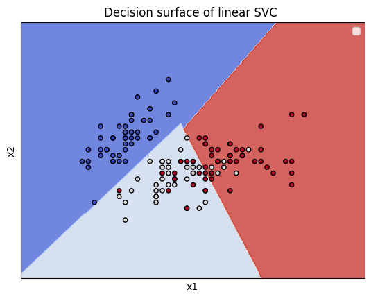

2.5 Estratétegias Multiclasse#
De acordo com as formalizações apresentadas nas seções anteriores, o processo de classificação é realizado em relação a apenas duas classes. No entanto, os problemas práticos usualmente abrangem a separação entre um número maior de classes. Para contornar essa situação, são empregadas as estratégias multiclasse.
Existem dois tipos de estratégias multiclasse, as que decompõem o problema em subproblemas binários e as que reformulam os métodos em si. A decomposição em subproblemas mostra-se a mais intuitiva e simples. Entre as diferentes propostas baseadas na ideia de decomposição, as estratégias Um-Versus-Restante (\(\textit{One-Versus-Rest}\) - OVR) e Um-Versus-Um (\(\textit{One-Versus-One}\) - OVO) são comuns.
Em relação à estratégia OVR, supondo um problema de classificação que envolve \(c\) classes, são definidos \(c\) classificadores binários. Cada classificador é responsável pela separação de um classe específica em relação às demais. A classe de um padrão é determinada pelo classificador binário que é capaz de discriminá-lo corretamente e proporcionar a maior distância possível à superfície de decisão (ou hiperplano de separação). Conforme já foi discutido, a distância entre um dado padrão \(\textbf{x}_{i}\) e asuperfície/hiperplano de decisão \(g(\textbf{x})=0\) é obtida por \(|g(\textbf{x})|\).
Por outro lado, em consideração à estratégia OVO, para o mesmo problema de classificação envolvendo \(c\) classes, são definidos \(c(c-1)/2\) (i.e., o número de combinações geradas por \(c\) elementos tomados dois a dois) classificadores binários, sendo cada um deles responsável pela separação de padrões de determinado par de classes. Dessa maneira, um padrão pode ser classificado com relação a uma mesma classe diversas vezes. Por sua vez, a classificação final de um padrão é dada pela maior frequência observada com que ele é associado a uma determinada classe.
A Figura 2.11 ilustra o uso das estratégias OVR e OVO em um problema de classificação envolvendo 3 classes (\(Ω={\circ,◇,△}\)). A notação \(g_{A/B}\) define que o hiperplano \(g\) realiza a separação entre os conjutos \(A\) e \(B\). Na estratégia OVR, o padrão \(♣\) pertence à classe composta por elementos \(∘\) devido à maior distância (perpendicular) em relação ao hiperplano \(g{\circ/Ω-\{\circ\}}\). Embora o padrão apresente maior distância quanto ao hiperplano \(g{◇/Ω-\{◇\}}\) e pertença à classe \(Ω-\{◇\}\), não é possível determinar se este padrão pertence se este padrão pertence a classe \(\circ\) ou \(△\). Na estratégia OVO, o padrão \(♣\) é classificado novamente segundo a classe \(∘\), pois, entre os três casos binários analisados (\(g_{∘/◇}\),\(g_{△/◇}\) e \(g_{∘/△}\)), ele foi associado à classe \(\circ\) duas vezes, em \(g_{∘/◇}\) e \(g_{∘/△}\).

Para aplicar a estratégia de OVR utilizando o SVM, basta a inclusão de \(\textbf{decision_function_shape='ovr'}\) durante a sua instanciação. A Figura 2.12 ilustra as regiões de decisão obtidas pelo SVM utilizando a estratégia.
